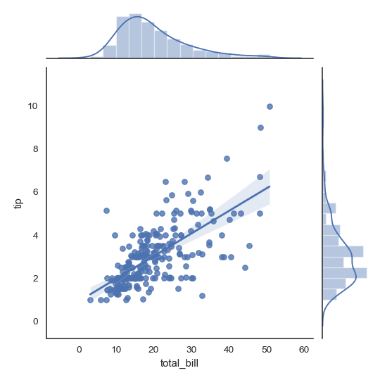
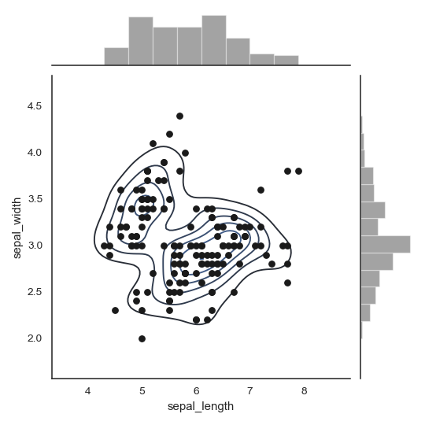
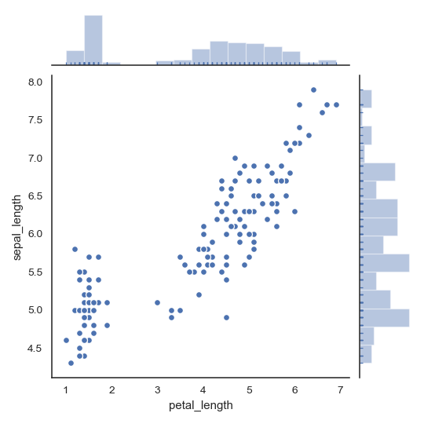

seaborn.jointplot¶
-
seaborn.jointplot(x, y, data=None, kind='scatter', stat_func=None, color=None, height=6, ratio=5, space=0.2, dropna=True, xlim=None, ylim=None, joint_kws=None, marginal_kws=None, annot_kws=None, **kwargs)¶ Draw a plot of two variables with bivariate and univariate graphs.
This function provides a convenient interface to the
JointGridclass, with several canned plot kinds. This is intended to be a fairly lightweight wrapper; if you need more flexibility, you should useJointGriddirectly.- Parameters
- x, ystrings or vectors
Data or names of variables in
data.- dataDataFrame, optional
DataFrame when
xandyare variable names.- kind{ “scatter” | “reg” | “resid” | “kde” | “hex” }, optional
Kind of plot to draw.
- stat_funccallable or None, optional
Deprecated
- colormatplotlib color, optional
Color used for the plot elements.
- heightnumeric, optional
Size of the figure (it will be square).
- rationumeric, optional
Ratio of joint axes height to marginal axes height.
- spacenumeric, optional
Space between the joint and marginal axes
- dropnabool, optional
If True, remove observations that are missing from
xandy.- {x, y}limtwo-tuples, optional
Axis limits to set before plotting.
- {joint, marginal, annot}_kwsdicts, optional
Additional keyword arguments for the plot components.
- kwargskey, value pairings
Additional keyword arguments are passed to the function used to draw the plot on the joint Axes, superseding items in the
joint_kwsdictionary.
- Returns
See also
JointGridThe Grid class used for drawing this plot. Use it directly if you need more flexibility.
Examples
Draw a scatterplot with marginal histograms:
>>> import numpy as np, pandas as pd; np.random.seed(0) >>> import seaborn as sns; sns.set(style="white", color_codes=True) >>> tips = sns.load_dataset("tips") >>> g = sns.jointplot(x="total_bill", y="tip", data=tips)

Add regression and kernel density fits:
>>> g = sns.jointplot("total_bill", "tip", data=tips, kind="reg")
Replace the scatterplot with a joint histogram using hexagonal bins:
>>> g = sns.jointplot("total_bill", "tip", data=tips, kind="hex")

Replace the scatterplots and histograms with density estimates and align the marginal Axes tightly with the joint Axes:
>>> iris = sns.load_dataset("iris") >>> g = sns.jointplot("sepal_width", "petal_length", data=iris, ... kind="kde", space=0, color="g")

Draw a scatterplot, then add a joint density estimate:
>>> g = (sns.jointplot("sepal_length", "sepal_width", ... data=iris, color="k") ... .plot_joint(sns.kdeplot, zorder=0, n_levels=6))
Pass vectors in directly without using Pandas, then name the axes:
>>> x, y = np.random.randn(2, 300) >>> g = (sns.jointplot(x, y, kind="hex") ... .set_axis_labels("x", "y"))

Draw a smaller figure with more space devoted to the marginal plots:
>>> g = sns.jointplot("total_bill", "tip", data=tips, ... height=5, ratio=3, color="g")

Pass keyword arguments down to the underlying plots:
>>> g = sns.jointplot("petal_length", "sepal_length", data=iris, ... marginal_kws=dict(bins=15, rug=True), ... annot_kws=dict(stat="r"), ... s=40, edgecolor="w", linewidth=1)
